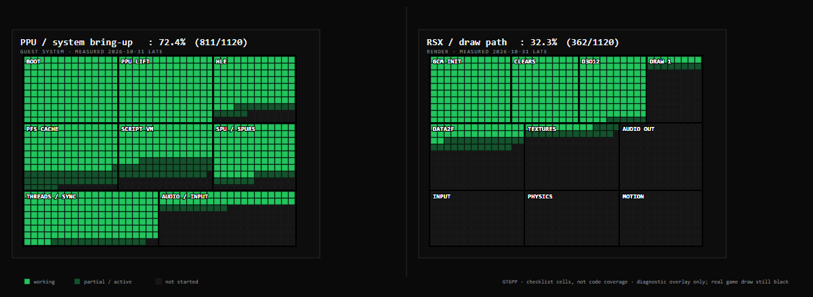

Gran Turismo 6,
recompiled native.
An experimental static recompilation of the PS3 version of Gran Turismo 6 (BCUS98296) into a native x86-64 Windows binary. No emulator at runtime. A true native port in progress.
Where it stands
Recent bring-up milestones on the native port.
- Boots and presents a 1280×720 window
- Full ADCH boot script parsed — 857 KB, 255k reads to EOF
- UI packages and menu scripts load — MenuClassDefine, cursor.*, arcade/option/gtmode/garage/gtauto
- Font / file-worker gate passed — generation-based lwcond + synchronous host-font reads
- MGOM.start fires and sets the boot-project request
- D3D12 present path reaches the screen — flips and clears land
- First visible frame still in progress — boot-project handoff pending
- Far from playable
The RPCS3 oracle confirms the v1.00 disc alone reaches the legal / loading screen, first-run UI and intro.
Prototypes.adc is a native loader artifact, not a missing game file. The real frame is still the
black cover; the next gate is loading boot.adc / PresentsRootSCEA.
What this is
An experimental static recompilation of the PlayStation 3 version of Gran Turismo 6 (BCUS98296). The game’s PPU code is translated ahead of time into C++ and built as a regular Windows executable.
This is not an emulator. There is no runtime interpretation of PS3 instructions. The long-term goal is a true native port.
The project ships code and documentation only. No game assets or copyrighted material are included — you must supply your own legally obtained disc files.
Static recomp vs. emulator
| GT6PP | RPCS3 | |
|---|---|---|
| Approach | Static recompilation | Dynamic recompilation |
| Runtime | Native x86-64 binary | Emulator process |
| Current state | Early bring-up | Playable with issues |
What works
The systems that are already functional on the native port.
PPU lift
75,652 functions; 70,989 corrected boundaries. The whole game codebase, translated ahead of time.
GT.VOL
Opens; 32,591 files indexed.
Boot script
Full ADCH012 parse; 255,264 reads to EOF.
SPU / SPURS
15 runtime job images lifted; dispatch returns rc=0.
HLE / threads
1,216 NID handlers; SPU event-handler crash fixed.
Present / clears
Flips and CLEAR_SURFACE reach D3D12.
UI scripts
MenuClassDefine, Prototypes.mwidget, cursor.* load.
PFS cache
Boot/presents + font slices seeded from GT.VOL.
Frame capture
Backbuffer BMP + verifier (no desktop screenshots).
Intro (offline)
cryptmovie → PAMF0041 → demux → 136 s 1080p H.264/AAC.
Progress map
A dense view of the bring-up status across the system.

Next up
-
01
Fix the lwcond / file-worker completion wake so
initAppandMainLoopstop dropping script frames. -
02
Load
boot.adc/PresentsRootSCEAand render the first non-black legal frame withGT6_BRINGUP_DDS=0. - 03 Then menus, audio and input; in-engine PAMF playback is a separate clean-room HLE task.
Contribute
Still very early. Experience with PS3 reverse engineering, static recompilation, D3D12, or the GT engine is useful. Issues and discussion are open on the repository.
If this project is useful to you, you can support the work.